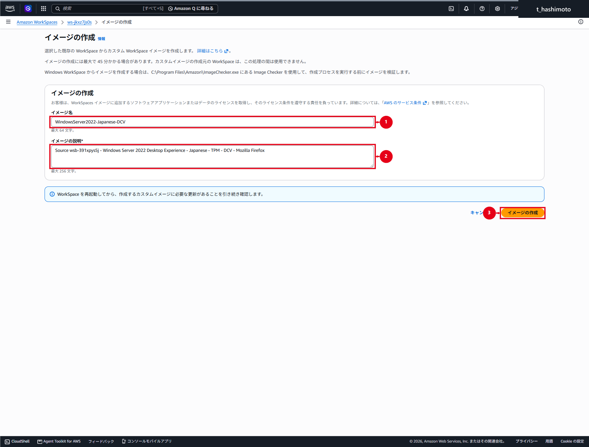
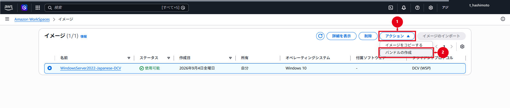
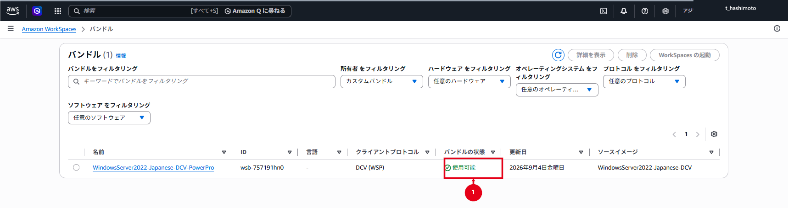
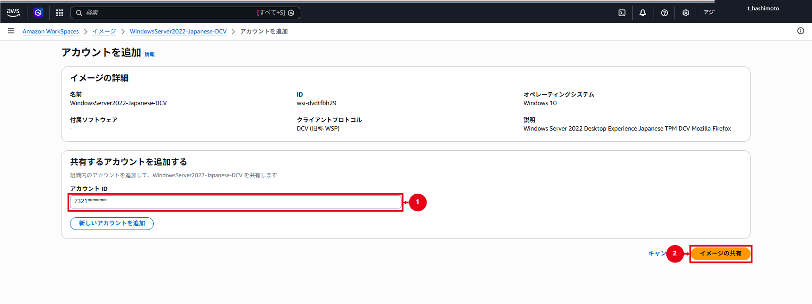
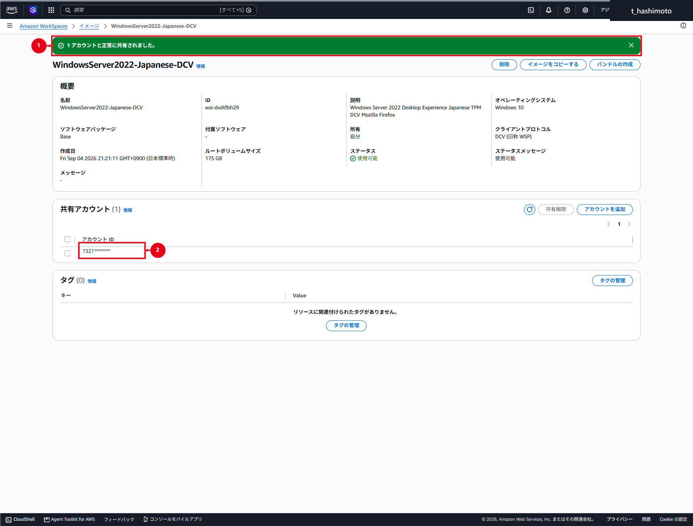

WorkSpaces カスタムイメージ・バンドル
Image Checkerの合格後にカスタムイメージとバンドルを作成し、検証用WorkSpaceで確認する
別AWSアカウントへの共有・コピー・再作成と、RDPを使用する場合の制約をまとめる
Amazon WorkSpacesカスタムイメージ・バンドル作成・共有手順
目次
概要
本手順書で実施すること
Windows Server 2022、DCV、PowerPro、ルート80GB／ユーザー50GBの参照WorkSpaceへ、共通アプリケーションとOS設定を適用します。AWS Image Checkerに合格した参照WorkSpaceからWindowsServer2022-Japanese-DCVイメージとPowerProカスタムバンドルを作成し、検証用WorkSpaceで動作を確認する
他AWSアカウントへ展開する場合は、カスタムバンドルではなくカスタムイメージを共有します。共有先はイメージを自身のアカウントへコピーし、そのコピーからカスタムバンドルを作成する
完了条件
- ✔ 参照WorkSpaceのOS、アプリケーション、空き容量、プロファイルおよび暗号化状態を確認している
- ✔ AWS Image Checkerの全項目が
PASSEDで、Validation successfulとなっている - ✔ カスタムイメージとカスタムバンドルが「利用可能」である
- ✔ カスタムバンドルのPowerPro、80GB／50GBおよび元イメージIDを確認している
- ✔ カスタムバンドルから作成した検証用WorkSpaceでアプリケーション、DCV、OUおよびGPOを確認している
- ✔ 共有先AWSアカウントでイメージをコピーし、共有先の新しいイメージIDを確認している
本番環境と今回の設定値
| 項目 | 本番環境の設定値 | 今回の設定値 |
|---|---|---|
| リージョン | アジアパシフィック（東京） | アジアパシフィック（東京） |
| 作成元Directory ID | d-956739e3e4 |
d-956739e3e4 |
| 参照WorkSpace ID | ws-jkxz7js0s |
ws-jkxz7js0s |
| イメージ名 | WindowsServer2022-Japanese-DCV |
WindowsServer2022-Japanese-DCV |
| イメージの説明 | Source wsb-391xpys5j - Windows Server 2022 Desktop Experience - Japanese - TPM - DCV - Mozilla Firefox |
Source wsb-391xpys5j - Windows Server 2022 Desktop Experience - Japanese - TPM - DCV - Mozilla Firefox |
| カスタムイメージID | wsi-dvdtfbh29 |
wsi-dvdtfbh29 |
| カスタムバンドル名 | WindowsServer2022-Japanese-DCV-PowerPro |
WindowsServer2022-Japanese-DCV-PowerPro |
| カスタムバンドルID | wsb-757191hn0 |
wsb-757191hn0 |
| OS | Windows Server 2022 | Windows Server 2022 |
| プロトコル | DCV（旧WSP） | DCV（旧WSP） |
| コンピューティング | PowerPro | PowerPro |
| ルート／ユーザーボリューム | 80GB／50GB | 80GB／50GB |
| ボリューム暗号化 | イメージ作成元は暗号化なし | イメージ作成元は暗号化なし |
| 共有先AWSアカウント | 7321******** |
7321******** |
本番環境列は今回の設定値を暫定転記しています。本番作業前に作成元Directory ID、参照WorkSpace ID、イメージ／バンドルID、ボリューム、暗号化および共有先AWSアカウントを現行設定と照合する
イメージの説明には作成元バンドル、OS、言語、TPM、プロトコルおよび主要アプリケーションを記載します。作成日はAWSコンソールに表示されるため、説明へ重複して記載しない
イメージ、バンドルおよび展開対象
| 項目 | 管理する内容 |
|---|---|
| カスタムイメージ | Windows、Cドライブ上のアプリケーション、OS設定 |
| カスタムバンドル | カスタムイメージ、コンピューティングタイプ、ルート／ユーザーボリューム |
| Directory ID／ユーザー | WorkSpaceの所属ディレクトリと利用者 |
| ADグループ | 環境ごとの展開対象ユーザー |
| GPO | 利用開始後も変更するセキュリティ・ユーザー設定 |
ADグループとカスタムバンドルはWorkSpaces標準機能で直接関連付けられません。環境ごとにADグループ、Directory IDおよびBundle IDの対応表を管理し、グループメンバーを抽出してユーザー単位でWorkSpaceを作成します。ADグループからユーザーを削除しても、WorkSpaceは自動削除されない
前提条件
- ✔ 参照WorkSpaceが「利用可能」で、変更状態が「なし」である
- ✔ 参照WorkSpaceのルート／ユーザーボリュームが暗号化されていない
- ✔ Cドライブに12GiBを超える空き容量がある
- ✔ イメージへ取り込むユーザープロファイルが10GiB未満である
- ✔ 承認済みWindows更新とアプリケーションを適用済みである
- ✔ アプリケーションはCドライブへ導入し、Sysprepに対応している
- ✔ ドメインユーザーの資格情報で起動するサービスが残っていない
- ✔ WorkSpaces、DCV、RDP、WinRM、PowerShellおよびAWSドライバーを削除していない
- ✔ ネットワークアダプターがDHCPを使用し、意図しない追加ドライブがない
- ✔ 共有元と共有先のAWSアカウントID、リージョン、IAM権限およびクォータを確認している
暗号化されたWorkSpaceからカスタムイメージは作成できません。カスタムバンドルのボリュームは、作成元イメージで利用できるサイズとAWSの許容範囲に従います。作成画面と作成後のバンドル詳細で実値を確認する
参照WorkSpaceの準備
- Amazon WorkSpaces作成・バンドル設定手順に従い、イメージ作成専用WorkSpaceを作成
- Windows Server 2022、DCV、PowerPro、ルート80GB／ユーザー50GBを指定
- ボリューム暗号化を選択していないことを確認
- 専用ユーザーを使用し、個人の業務データを保存しない
- 本番用GPOがImage Checkerを妨げる場合は、イメージ作成専用OUで影響を分離
- 承認済みWindows更新と共通アプリケーションを適用
- ライセンスが複製後の利用条件を満たすことを確認
- 個人ファイル、ダウンロード、一時ファイル、キャッシュ、ブラウザー履歴および認証情報を削除
- 不要なユーザープロファイルを削除し、対象プロファイルが10GiB未満であることを確認
- Cドライブに12GiBを超える空き容量があることを確認
- Windowsを再起動し、アプリケーション、ネットワークおよびDCV接続を確認
- WorkSpacesクライアントを切断
利用開始後も変更する設定はイメージへ固定せず、GPOで管理する
AWS Image Checker
検査を実行する
- 参照WorkSpaceへ管理者権限で接続
- 管理者PowerShellでImage Checkerを起動
Start-Process 'C:\Program Files\Amazon\ImageChecker.exe' -Verb RunAs- 「Run」を選択
- 全項目が
PASSEDで、Validation successfulと表示されることを確認 - 警告またはエラーが残る場合は、イメージ作成へ進まない
Staged AppX警告の解消
One or more AppX packages are in a staged stateと表示された場合は、図1の警告対象を確認する

最初に管理者PowerShellでStagedのパッケージを特定し、結果を保存します。再登録の対象端末は、イメージ作成専用の参照WorkSpaceだけです。Stagedが1件以上あり、個別パッケージの削除後も同じ警告が残る場合に限って、後述の再登録を実施します。対象が0件の場合は再登録せず、Image CheckerのInfoとログから別の原因を確認する
$stagedPackages = Get-AppxPackage -AllUsers |
Where-Object { $_.PackageUserInformation -match 'Staged' }
$stagedPackages |
Select-Object Name, PackageFullName, PackageUserInformation今回の環境では、個別パッケージ削除では警告が解消しませんでした。この場合は、管理者PowerShellで、全ユーザーに登録されていて有効なAppXManifest.xmlを持つ既存AppXパッケージを再登録します。再登録対象はStagedと表示された1パッケージだけではなく、この条件を満たす既存AppXパッケージ
$packagesToRegister = Get-AppxPackage -AllUsers |
Where-Object {
$_.InstallLocation -and
(Test-Path (Join-Path $_.InstallLocation 'AppXManifest.xml'))
}
$packagesToRegister | ForEach-Object {
Add-AppxPackage -DisableDevelopmentMode -Register (Join-Path $_.InstallLocation 'AppXManifest.xml')
}
$remainingStagedPackages = Get-AppxPackage -AllUsers |
Where-Object { $_.PackageUserInformation -match 'Staged' } |
Select-Object Name, PackageFullName, PackageUserInformation
$remainingStagedPackages警告：AppX再登録は参照WorkSpaceだけで実施する
このコマンドは全ユーザーの既存AppXパッケージ登録を処理します。業務利用中のWorkSpaceへ一律実行せず、イメージ作成専用の参照WorkSpaceで、実行前のStaged一覧とインストール済みアプリを記録してから1回だけ実行します。$remainingStagedPackagesの出力がなく、業務アプリとスタートメニューが正常で、Image Checkerを再実行して全項目がPASSEDになった場合だけイメージ作成へ進みます。AppX再登録でエラーが発生する、Stagedが残る、アプリが起動しない、またはImage Checkerの警告が残る場合はイメージ作成を中止します。パッケージを推測で削除せず、変更前の健全なスナップショットからの復元、または参照WorkSpaceの再構築を選択する
出典：DevelopersIO：WorkSpacesのImage CheckerでAppX関連エラーが出た場合の対処記事ではStagedパッケージの削除で解消しなかった後、全AppXパッケージの再登録によりStagedが0件となり、Image Checkerとイメージ作成が成功した事例を紹介している
図2で全項目がPASSED、図3でValidation successfulを確認する


カスタムイメージの作成
出典：AWS公式：カスタムWorkSpacesイメージとバンドルを作成する
情報：イメージ作成時のWorkSpace状態
作成元WorkSpaceは「利用可能（Available）」、変更状態は「なし（None）」である必要があります。AutoStopで停止中の場合は起動して利用可能になるまで待ちます。利用者のログインは不要ですが、作成中は使用できないため、クライアントを切断してから実行する
Amazon WorkSpacesコンソールで作成元WorkSpaceを選択
WorkSpace ID、状態、変更状態、暗号化および作成元バンドルを確認
「アクション」から「イメージの作成」を選択
イメージ名へ
WindowsServer2022-Japanese-DCVを入力説明へ本番環境と今回の設定値に記載した文字列を入力
作成元バンドル、OS、言語、TPM、プロトコルおよび主要アプリケーションを照合
「イメージの作成」を選択
図5では、①イメージ名、②説明、③「イメージの作成」を確認する

- 「イメージ」を開き、対象イメージが「利用可能」になるまで待機
- イメージ名、イメージID、OS、プロトコルおよび所有者を確認

カスタムバンドルの作成
- 「イメージ」で作成したカスタムイメージを選択
- 「アクション」から「バンドルの作成」を選択
図7では、①「アクション」、②「バンドルの作成」を選択する

- バンドル名へ
WindowsServer2022-Japanese-DCV-PowerProを入力 - コンピューティングタイプにPowerPro、ルート80GB、ユーザー50GBを指定
- 「バンドルの作成」を選択
図8では、①バンドル名、②PowerPro、③80GB／50GB、④「バンドルの作成」を確認する

- 「バンドル」で状態が「利用可能」になるまで待機
- バンドルID、元イメージID、PowerPro、80GB／50GBおよびDCVを確認

AWS CLIで確認する場合は、実際のBundle IDを指定する
aws workspaces describe-workspace-bundles --bundle-ids wsb-757191hn0 --region ap-northeast-1 --query "Bundles[0].{State:State,ImageId:ImageId,Compute:ComputeType.Name,RootGiB:RootStorage.Capacity,UserGiB:UserStorage.Capacity}" --output table --no-cli-pagerState=AVAILABLE、元イメージID、Compute=POWERPRO、RootGiB=80、UserGiB=50が一致しないバンドルは展開に使用しない
カスタムバンドルの検証
- WorkSpaces作成画面で「手動で設定」、「WorkSpacesバンドルを使用」の順に選択
- 作成したカスタムバンドル名とBundle IDを指定して、検証用WorkSpaceを1台作成
AVAILABLEになるまで待ち、クライアントから接続- OS、DCV、PowerPro、80GB／50GBおよび共通アプリケーションを確認
- コンピューターオブジェクトが対象OUにあることを確認
gpupdate /forceとgpresult /scope computer /rで意図したGPOを確認- 業務通信、再起動、サインアウトおよび再サインインを確認
- 検証結果が承認されるまで、本番で使用するBundle IDを切り替えない
「既存のWorkSpaceからコピー」は既存機の設定を複製する経路であり、新しいカスタムバンドルを選択した確認には使用しない
イメージとバンドルの更新
既存イメージを直接編集せず、現行バンドルから更新作業用WorkSpaceを作成して、OS・アプリケーション・設定を変更します。Image Checkerに合格した新しい版のイメージから、新しい版のバンドルを作成します。検証後に環境別のBundle IDを切り替え、旧イメージと旧バンドルは承認済みの保管期限まで残す
既存バンドルの元イメージを更新しても、作成済みWorkSpaceのOSやアプリケーションは自動更新されません。再構築または再作成は、データ、スナップショットおよび利用者影響を確認した別作業として実施する
ADグループによる展開対象管理
- 環境ごとにADグループ、Directory IDおよび検証済みBundle IDの対応表を承認
- グループメンバーから、無効ユーザー、サービスアカウントおよび既存WorkSpace利用者を除外
- 同一ディレクトリ内でユーザーが重複していないことを確認
- 対象人数、WorkSpacesクォータおよびサブネットの空きIPを確認
- 各環境で1名の検証ユーザーを先行作成し、承認後に残りを展開
グループ追加だけではWorkSpaceは自動作成されません。一括作成する場合は、承認済みスクリプトまたは自動化でユーザーごとに作成要求を発行する
他AWSアカウントへの共有
カスタムバンドルは共有できません。カスタムイメージの共有と共有解除は出典：AWS公式：カスタムイメージを共有または共有解除する、共有先でのコピーは出典：AWS公式：カスタムイメージをコピーする
共有元AWSアカウント
- 共有元で対象リージョンの「イメージ」を開く
- イメージ名、イメージID、状態、OSおよびプロトコルを作業申請と照合
- 「共有アカウント」で「アカウントを追加」を選択

- 共有先の12桁AWSアカウントIDを入力
- 作業申請と再照合し、「イメージの共有」を選択
図11では、①共有先AWSアカウントID、②「イメージの共有」を確認する

- 成功メッセージと共有アカウント一覧を確認
図12では、①成功メッセージ、②共有先AWSアカウントを確認する

図11～14のAWSアカウントIDは、先頭4桁だけを残し、残り8桁を*でマスクした画像を使用します。実作業では12桁の値を作業申請と照合する
共有先AWSアカウント
- 共有元と同じリージョンで、共有されたイメージを表示
- 共有元AWSアカウント、イメージ名およびイメージIDを照合
- 「イメージのコピー」を選択し、共有先で使用する名前と説明を入力
- コピーが「利用可能」になるまで待ち、共有先で新しいイメージIDが発行されたことを確認
- 共有先のコピーからPowerPro、80GB／50GBのカスタムバンドルを作成
- 検証用WorkSpaceを1台作成し、カスタムバンドルの検証項目を実施
共有先で作成したコピーは、共有元が共有を解除しても残ります。共有先がコピーしたイメージを別AWSアカウントへ再共有することはできないため、新たな共有先には元の所有アカウントから共有する
共有解除
- 共有先でコピー処理が進行中でないことを確認
- 共有元の対象イメージで、共有解除するAWSアカウントを選択
- AWSアカウントIDを照合し、「共有解除」を選択
図13では、①対象AWSアカウント、②「共有解除」を確認する

- 確認ダイアログのイメージ名とAWSアカウントIDを再確認し、「共有解除」を選択
図14では、①対象、②「共有解除」を確認する

- 成功通知、または共有アカウント一覧から対象が消えたことを確認
共有解除前に共有先がコピーしたイメージは残るため、削除が必要な場合は共有先で処理する
切り戻しと削除
新しいイメージまたはバンドルに問題がある場合は展開を停止し、環境別対応表を直前の検証済みBundle IDへ戻します。問題のバンドルから作成したWorkSpaceを特定し、データと利用者影響を確認して再構築または再作成します。切り戻し完了まで旧イメージと旧バンドルを削除しない
カスタムイメージまたはバンドルを削除する場合は、出典：AWS公式：カスタムバンドルとイメージを削除するに従い、依存するWorkSpace、バンドル、共有先およびコピー処理がないことを確認する
WorkSpaceへRDP接続して調査する場合は、Amazon WorkSpaces RDP接続運用手順に従う
Amazon WorkSpaces RDP接続運用手順
目次
概要
本手順書で実施すること
WorkSpacesクライアントで接続できないWindows WorkSpaceを調査する場合に限り、管理用EC2または承認済みの同一ディレクトリ内WorkSpaceから、対象のプライベートIPアドレスへRDP接続します。接続元、TCP 3389の許可範囲、Windowsのログオン権限および作業後の閉塞までを一つの変更作業として実施する
RDPは通常の利用経路ではありません。利用者の恒常的な接続や、インターネットからの直接接続には使用しない
完了条件
- ✔ 対象WorkSpaceとRDPを使用する調査目的が承認されている
- ✔ TCP 3389の接続元が管理用EC2または承認済み管理用CIDRだけに限定されている
- ✔ 対象WorkSpaceのコンピューター名を確認してから調査を実施している
- ✔ 調査後にRDPセッションを終了し、一時許可ルールを削除している
- ✔ セキュリティグループなどのAWS API操作はCloudTrailの管理イベントで確認し、RDPログオンなどのWindows側イベントは監査設定と保持期間の範囲内でWindowsイベントログから確認している
本番環境と今回の設定値
| 項目 | 本番環境の設定値 | 今回の設定値 |
|---|---|---|
| 通常の接続方法 | WorkSpacesクライアント | WorkSpacesクライアント |
| RDPの用途 | 障害調査・承認済み保守だけ | 障害調査・承認済み保守だけ |
| 接続先 | 対象WorkSpaceのプライベートIP | 対象WorkSpaceのプライベートIP |
| 接続元 | 承認済み管理用EC2／管理用ネットワーク | 管理用EC2または承認済みの同一ディレクトリ内WorkSpace |
| 通信 | TCP 3389 | TCP 3389 |
| 接続元制限 | 管理用SGまたは承認済みCIDR | 0.0.0.0/0および::/0は使用しない |
| AWS側の証跡 | CloudTrailの管理イベント（セキュリティグループなどのAWS API操作） | CloudTrailの管理イベント（セキュリティグループなどのAWS API操作） |
| Windows側の証跡 | 監査設定と保持期間の範囲内で記録されたRDPログオンなどのイベント | 監査設定と保持期間の範囲内で記録されたRDPログオンなどのイベント |
前提条件
- ✔ 対象WorkSpaceのID、Directory ID、ユーザー、プライベートIPおよび状態を確認している
- ✔ 接続元から対象WorkSpaceのプライベートIPへ経路がある
- ✔ セキュリティグループとネットワークACLで必要な通信を許可できる
- ✔ 対象WindowsでRemote Desktop Servicesが起動している
- ✔ Windows Defender Firewallで承認済みのRDP通信を許可している
- ✔ 接続ユーザーが
Remote Desktop UsersまたはAdministratorsに所属している - ✔ 「リモート デスクトップ サービスを使ったログオンを許可」の対象であり、「拒否」の対象ではない
- ✔ DNS、Kerberosおよびドメインコントローラーとの通信が正常である
- ✔ 一時許可ルールの削除担当者と削除時刻を決めている
注意：RDPをインターネットへ公開しない
TCP 3389の接続元に0.0.0.0/0または::/0を指定しません。WorkSpacesクライアント向けのデバイス制御だけではRDP接続を制御できないため、ネットワーク、Windows Defender Firewall、ログオン権限およびADグループで重ねて制御する
接続前のセキュリティ設定
- WorkSpacesコンソールで対象WorkSpaceを開き、WorkSpace ID、Directory ID、ユーザー、状態およびプライベートIPを作業申請と照合
- 対象ディレクトリへ関連付けた追加セキュリティグループを確認
- 管理用EC2のセキュリティグループ、または承認済み管理用CIDRからTCP 3389を許可
- AWSが自動作成した
<Directory ID>_workspacesMembersの既存ルールを削除または置換しない - Windows側でRDP、NLA、Windows Defender Firewall、許可／拒否のユーザー権利を確認
- 一時ルールには、変更申請番号、用途および削除予定時刻を記録
多数のWorkSpacesを管理する場合は、RDP権限、Windows Defender Firewallおよび監査設定を個別変更せず、専用GPOとADグループで管理します。「制限されたグループ」を使用すると既存メンバーを置換する可能性があるため、既存のローカルグループ構成を維持する場合は、グループポリシー基本設定の「ローカル ユーザーとグループ」などで追加方式を選択する
RDP接続
- 管理用EC2または承認済みの同一ディレクトリ内WorkSpaceで「リモート デスクトップ接続」を起動
- 接続先へ対象WorkSpaceのプライベートIPアドレスを入力
- 承認済みのドメインユーザーで接続
- 接続後に
hostnameを実行し、WorkSpacesコンソールのコンピューター名と一致することを確認 - 承認された調査または保守作業だけを実施
- 作業完了後にサインアウトし、RDPセッションが残っていないことを確認
- 一時的に追加したTCP 3389ルールを削除
- セキュリティグループなどAWS APIによる変更は、CloudTrailの管理イベントで対象API、実行者および実行時刻を確認する。CloudTrailにはRDPセッション内のWindows操作や通信内容は記録されません。Windowsイベントログでは、監査ポリシーが有効で、かつログの保持期間内に記録されたRDPログオンなどのイベントだけを確認する。任意のWindows操作がすべて記録されるわけではないため、実施コマンド、変更前後の値および担当者は作業記録にも残す
接続できない場合の確認
次の順で切り分ける
- WorkSpaceが削除中、停止中または再構築中ではないことを確認
- 接続先が対象WorkSpaceの現在のプライベートIPであることを確認
- 接続元から対象IPのTCP 3389へ到達できることを確認
- セキュリティグループとネットワークACLの往復通信を確認
- Windows Defender FirewallのRDP受信規則を確認
TermServiceが実行中か確認- 接続ユーザーのADグループ、ローカルグループおよびユーザー権利を確認
- DNS名前解決、時刻同期およびドメインコントローラーへの通信を確認
- 監査設定とログ保持期間を確認し、記録されている場合はWindowsイベントログでRDP、認証およびグループポリシー関連イベントを確認
AWS公式では、UNHEALTHYとなったWorkSpaceに対し、同じディレクトリ内の正常なWorkSpaceからRDPで調査する方法を案内しています。最初にWorkSpacesコンソールから再起動し、RDP接続後は必要ポート、CPU負荷、Windows FirewallおよびSkylightWorkspacesConfigServiceを確認する。再構築はデータ損失の可能性があるため、ほかの調査を終えた後の最終手段